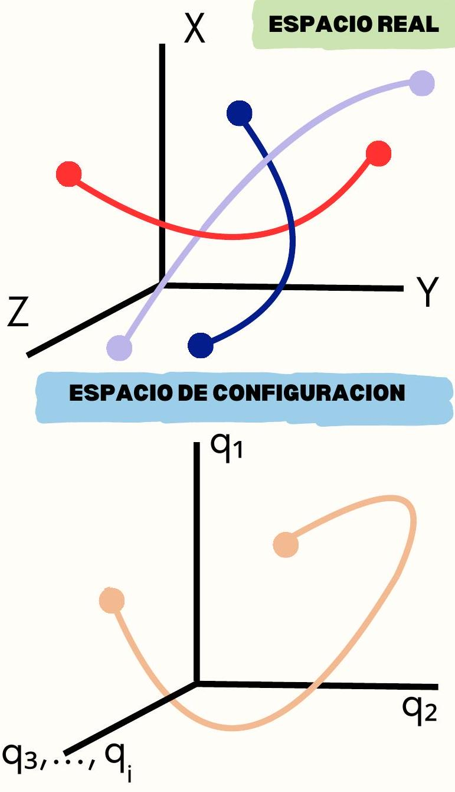
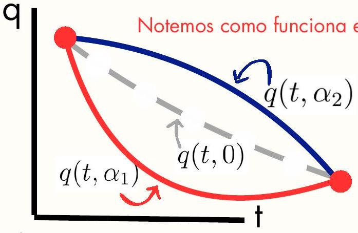

1. ESPACIOS DE CONFIGURACION
Espacio real hace referencia al uso de las coordenadas comunes y corrientes, distinguen las tres dimensiones espaciales las cuales estamos acostumbrados y describimos el sistema bajo dichas coordenadas. Espacio de configuración es el formado por las k coordenadas generalizadas, lo cual formaría un hiper-espacio de k dimensiones, con lo cual se podría describir el movimiento de dicho sistema bajo una sola trayectoria en este nuevo espacio. El propósito de esto es describir el movimiento del sistema bajo una sola trayectoria, una sola curva. Y asi definir el funcional acción.

Condensamos todas las coordenadas generlizadas independientes y a cada una se le asigna una recta numerica, ose una dimension en este hiper-espacio
SEMANA 02: FORMULACIÓN HAMILTONIANA
2. PRINCIPIO DE HAMILTON
Es un principio integral donde la el movimiento del sistema esta dado por fuerzas (excepto las ligaduras) que derivan de un potencial. Y si el sistema es conservativo el principio anuncia que:
El movimiento que el sistema realiza entre dos instantes de tiempos esta dado por la integral curvilínea donde el lagrangiano tiene un valor estacionario, por ello es equivalente a escribir...
4. MULTIPLICADORES DE LAGRANGE
Sistemas no Conservativos: Nos encontramos ante un sistema no conservativo si las fuerzas que intervienen no provienen de un potencial.
Método de Multiplicadores de Lagrange: Si las ligaduras son no holonomas por ser de una forma diferencial no integrable, pero se pueden plantear de forma variacional con a las coordenadas generalizadas, y luego hallaremos una forma de describir la ligadura k-esima en base a
Los Ckj son funciones de las coordenadas y velocidades generalizadas, tales que se forma la ligadura k-esima Ahora introducimos los multiplicadores de lagrange, funciones de coordenas y/o velocidades generalidas que escogeremos con el fin de anualr terminos Luego las integramos a las ec. de Euler-Lagrange y luego los m primeros \(\lambda\) son seleccionas tal que anulen los primeros m sumandos
3. PRINCIPIOS VARIACIONALES
Notar que la acción es un funcional, osea un grupo de diferentes funciones. Para representar a los diferentes caminos que describe este funcional en el sistema en el espacio de configuraciones consideramos lo siguiente:
Donde \(\eta\) es una función cualquiera que sea continua y diferenciable. Y a es un parametro arbitrario.

De forma análoga a buscar un punto critico de una función, el principio de Hamilton trata de buscar un punto critico del funcional, osea que sea estacionario De ello que la acción que realizara el sistema tiene que ser tal que...
Matemáticamente significa que la razon de cambio respecto a la variación de \(a\) es 0 , osea la curva mas 'rígida' es la empleada por la naturaleza Despues un tratamiento matematico y usar el lema fundamental del calculo variacional se puede llegar a las ecuaciones de Euler-Lagrange
Ahora los \(\lambda\) son conocidos y las variaciones de las coordenadas sobrantes ahora son independientes, por ello...
Para coordenadas sujetas a fuerzas no conservativas, las ecuaciones de Euler-Lagrange se escriben
Principio de Hamilton y Principios Variacionales
1. Espacio de Configuraciones
- Espacio Real: Describe el sistema en coordenadas espaciales comunes \((x, y, z)\) para \(N\) partículas, dependiendo del tiempo \(t\).
- Espacio de Configuraciones: Se define a partir de las coordenadas generalizadas \(q_1, q_2, \dots, q_k\). Si un sistema posee \(k\) coordenadas generalizadas independientes, su estado se representa como un punto en un espacio \(\mathbb{R}^k\). La evolución del sistema está dada por las funciones de trayectoria \(q_j = q_j(t)\).
2. Integral de Acción y Principio de Hamilton
Se define la Acción (\(S\) o \(I\)) como la integral temporal del Lagrangiano \(L(q_i, \dot{q}_i, t)\) entre dos instantes de tiempo \(t_1\) y \(t_2\): $$ S = \int_{t_1}^{t_2} L(q_i, \dot{q}_i, t) dt $$
Nota: La elección de las coordenadas generalizadas no importa, ya que la acción es invariante ante transformaciones de coordenadas.
Principio de Hamilton: La trayectoria real del sistema (la que efectivamente sigue en la naturaleza) es aquella para la cual la integral de acción es estacionaria. Es decir, ante pequeñas variaciones de la trayectoria que mantienen fijos los extremos, la variación de la acción es nula: $$ \delta S = 0 $$
(Este principio establece una jerarquía en la formulación de la mecánica: Newton \(\rightarrow\) Lagrange \(\rightarrow\) Hamilton, siendo la formulación integral la más fundamental).
3. Cálculo Variacional
Para entender cómo minimizar la acción, analizamos una integral matemática genérica de la forma: $$ J = \int_{x_1}^{x_2} f(y, y', x) dx $$ (En física, \(x\) funcionará como el tiempo \(t\), y \(y\) como las coordenadas \(q_j\)).
Queremos hallar la función \(y(x)\) que hace que \(J\) sea un extremo, con los puntos finales fijos: \(y(x_1) = y_1\) y \(y(x_2) = y_2\).
Proponemos una familia de curvas parametrizadas por \(\alpha\): $$ y(x, \alpha) = y(x, 0) + \alpha \eta(x) $$ Donde \(\eta(x)\) es una función arbitraria de variación, con la única condición de que se anule en las fronteras: \(\eta(x_1) = \eta(x_2) = 0\).
Para que \(J\) sea estacionario, debe cumplirse que: $$ \left( \frac{\partial J}{\partial \alpha} \right)_{\alpha=0} = 0 $$
Derivando el integrando mediante la regla de la cadena: $$ \frac{\partial J}{\partial \alpha} = \int_{x_1}^{x_2} \left( \frac{\partial f}{\partial y} \frac{\partial y}{\partial \alpha} + \frac{\partial f}{\partial y'} \frac{\partial y'}{\partial \alpha} \right) dx = 0 $$
Sabiendo que \(\frac{\partial y}{\partial \alpha} = \eta(x)\) y \(\frac{\partial y'}{\partial \alpha} = \frac{d}{dx}\left(\frac{\partial y}{\partial \alpha}\right)\), aplicamos integración por partes al segundo término: $$ \int_{x_1}^{x_2} \frac{\partial f}{\partial y'} \frac{d}{dx}\left(\frac{\partial y}{\partial \alpha}\right) dx = \left[ \frac{\partial f}{\partial y'} \frac{\partial y}{\partial \alpha} \right]{x_1}^{x_2} - \int dx $$}^{x_2} \frac{d}{dx}\left(\frac{\partial f}{\partial y'}\right) \frac{\partial y}{\partial \alpha
Como la variación se anula en los extremos (\(\frac{\partial y}{\partial \alpha} = 0\) en \(x_1\) y \(x_2\)), el término evaluado es cero. Reemplazando en la integral completa obtenemos: $$ \frac{\partial J}{\partial \alpha} = \int_{x_1}^{x_2} \left[ \frac{\partial f}{\partial y} - \frac{d}{dx}\left(\frac{\partial f}{\partial y'}\right) \right] \eta(x) dx = 0 $$
Lema Fundamental del Cálculo Variacional
Si la integral \(\int M(x)\eta(x) dx = 0\) para toda función arbitraria \(\eta(x)\) que se anule en los extremos, entonces obligatoriamente: $$ M(x) = 0 $$
Esto nos da la Ecuación de Euler-Lagrange: $$ \frac{\partial f}{\partial y} - \frac{d}{dx}\left(\frac{\partial f}{\partial y'}\right) = 0 $$
Al hacer la traducción a variables físicas (\(f \to L\), \(y \to q_j\), \(x \to t\)), obtenemos la ecuación de movimiento: $$ \frac{d}{dt}\left(\frac{\partial L}{\partial \dot{q}_j}\right) - \frac{\partial L}{\partial q_j} = 0 $$
4. Transformación de Legendre y Espacio de Fase
Mientras que el lagrangiano usa \(n\) coordenadas y \(n\) velocidades (espacio de configuración), el formalismo hamiltoniano utiliza variables de posición y momento.
Definimos los Momentos Conjugados (\(p_i\)) como: $$ p_i = \frac{\partial L(q_j, \dot{q}_j, t)}{\partial \dot{q}_i} $$ Esto nos traslada al Espacio de Fase, el cual consta de \(2n\) variables independientes: \((q_i, p_i)\).
La Transformación de Legendre
Para una función \(f(x, y)\), su diferencial total es: $$ df = \frac{\partial f}{\partial x} dx + \frac{\partial f}{\partial y} dy \equiv u \, dx + v \, dy $$ Definimos una nueva función \(g = ux - f\). Al diferenciarla: $$ dg = (x \, du + u \, dx) - (u \, dx + v \, dy) = x \, du - v \, dy $$ De donde se deduce que \(\frac{\partial g}{\partial u} = x\) y \(\frac{\partial g}{\partial y} = -v\).
El Hamiltoniano
Aplicando esta transformación al Lagrangiano (donde \(f \to L\), \((x,y) \to (\dot{q}_i, q_i)\) y \(u \to p_i\)), definimos la función Hamiltoniano \(H(q_i, p_i, t)\): $$ H(q_i, p_i, t) = \sum_i p_i \dot{q}_i - L(q_i, \dot{q}_i, t) $$
5. Ecuaciones de Hamilton
Calculamos la diferencial total del Hamiltoniano usando su definición: $$ dH = \sum_i (p_i \, d\dot{q}_i + \dot{q}_i \, dp_i) - \sum_i \left( \frac{\partial L}{\partial q_i} dq_i + \frac{\partial L}{\partial \dot{q}_i} d\dot{q}_i \right) - \frac{\partial L}{\partial t} dt $$
Agrupando términos y recordando que \(p_i = \frac{\partial L}{\partial \dot{q}_i}\) (lo que cancela los \(d\dot{q}_i\)) y que por Euler-Lagrange \(\dot{p}_i = \frac{\partial L}{\partial q_i}\): $$ dH = \sum_i (\dot{q}_i \, dp_i - \dot{p}_i \, dq_i) - \frac{\partial L}{\partial t} dt $$
Por otro lado, como \(H = H(q_i, p_i, t)\), su diferencial exacta también debe ser: $$ dH = \sum_i \left( \frac{\partial H}{\partial q_i} dq_i + \frac{\partial H}{\partial p_i} dp_i \right) + \frac{\partial H}{\partial t} dt $$
Igualando los coeficientes de las diferenciales (\(dp_i, dq_i, dt\)) de ambas expresiones, llegamos a las Ecuaciones Canónicas de Hamilton:
Referencias bibliográficas
- Gantmajer, Mecánica analítica.
- M. Krasnov, Cálculo variacional.
- H. Goldstein, Mecánica clásica.